Guide to Using GitHub
Forking a Repository
To fork a repository (repo), make sure you are logged into GitHub and then navigate your browser to the repo's main page on GitHub's website. I will be using the Spring 2016 iteration of This is Indian Country to demonstrate this, but the process is the same for any repository.
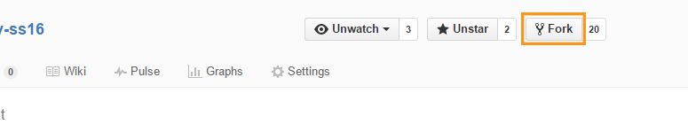Click on the "Fork" button near the top-right of the page.
This should redirect you to a new page, which will be for your forked repo, even though it looks the same as the page from the original repo.
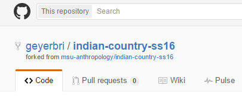Note how the name of this repo is your username, followed by the repo name, with the original repo's username and repo name combination underneath it.
Cloning a Repository
Cloning is the process of saving a local copy of your repo to your own computer, so that you can make changes outside of the internet. A clone is simply a local version of a repo, which means it must be synced periodically with your version on the web. To do this, you must first download and install the GitHub Desktop program and make sure you have set up the program by logging into your account. This tutorial uses screenshots from the PC version of this application, but the majority of the steps should be the same for a Mac. The few steps that are drastically different will include screenshots for Mac.
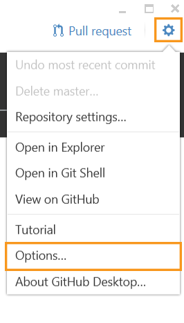FOR PC: To confirm you have logged into your account, locate the settings area of the application. It is the button that looks like a gear.
This will bring up a list of places to go to change various settings. Pick the one that says "Options..."
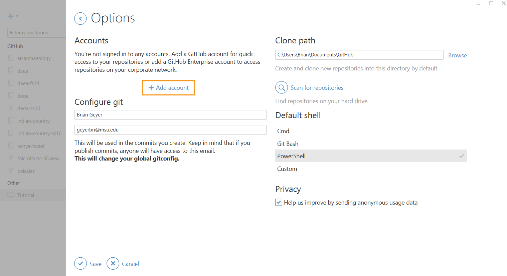Here you find whether or not you are logged into your account. If you see your account, then great, if not, you'll see this view, with the option to "Add Account."
Login to your account to complete the process.
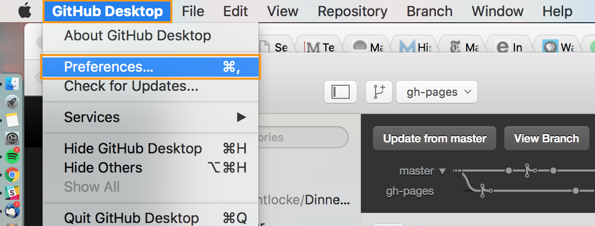FOR MAC:To confirm you have logged into your account, click on "GitHub Desktop" in the Menu Bar at the top of the screen and choose "Preferences..." to open the Preferences window.
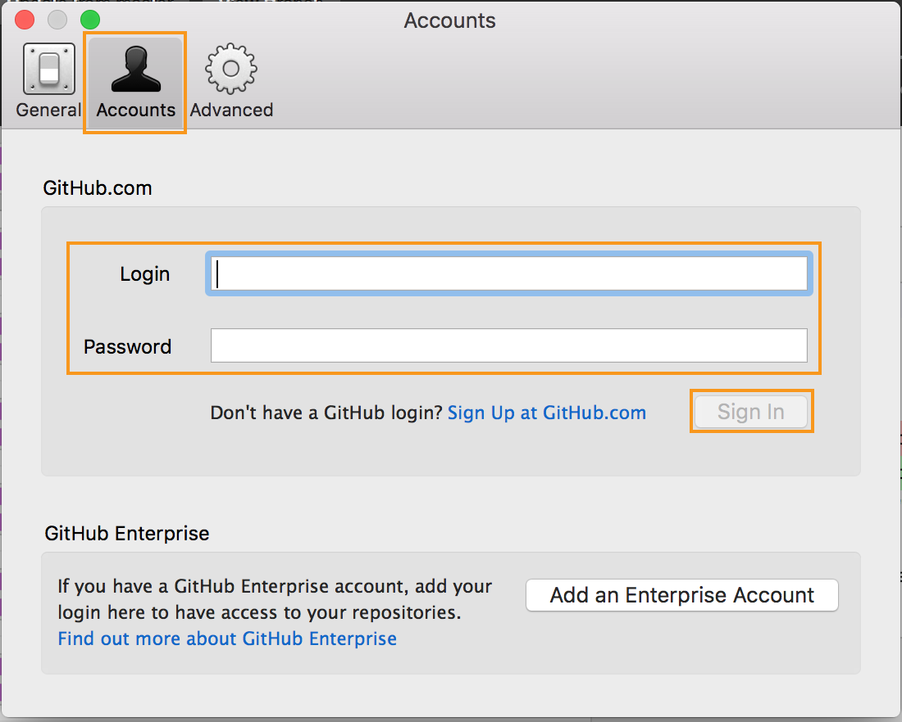Click on the "Accounts" tab, and confirm that you are signed into your account. If you are not, add your credentials and click "Sign In."
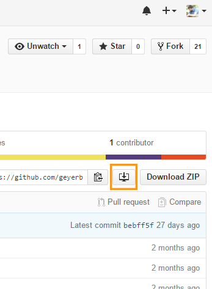To clone, go back to the repo on GitHub in your internet browser and click on the button that looks like a computer monitor with an arrow pointing down into it. This image depicts the top-right of the repo page.
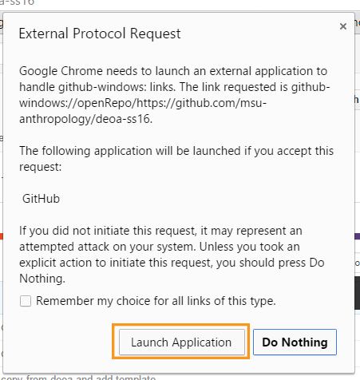This may open up a window that asks for permission to launch a program. Grant this permission.
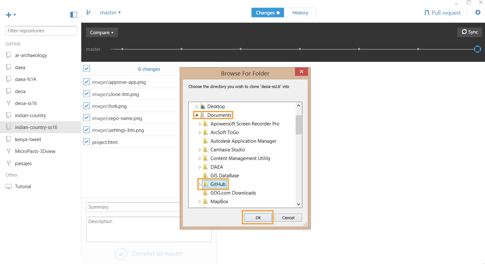This will launch your GitHub desktop application and will ask you where you will like to save the repo. As I said in class, it is best to keep all your cloned repos in a single folder titled GitHub. You can see here that my GitHub folder is inside my Documents folder.
After accepting the location, your clone is now on your computer. You will notice that the application shows the active branch at the top of the window. Please simply leave this setting alone and do not change between branches. This will make things easier for you for the duration of this project. If you do wish to understand how branch changes on a cloned repo work, please come and see me in LEADR.
Making Changes Locally
To make changes to your cloned repo before sending them to the original online, install a text editing program. As mentioned in class, I recommend either Notepad++ for PC or TextWrangler for Mac.
To open any single file (including the .html files we're editing for this project), simply right-click for PC, or control-click for Mac, on the file and choose the text editor from the list (at least, Notepad++ adds itself to this list), or choose "Open With" and then pick the text editor.
If you want to view changes as you make them to .html files, simply double-click to open and it should open in your internet browser. As you make changes in the text editor to the file, you can refresh the window or tab of the file in the browser to see the changes immediately.
Images with Captions
Because LEADR projects often require captions on images in order to allow for proper citation, adding images to html files requires a little more than simple <img> tags. Furthermore, the src value for an image used on a LEADR project should point to a locally-saved image, rather than a URL of the image on a website. This means you should be saving images from the internet into your repo, often into the "images" folder that is a sub-folder to the one that contains your html file. For example, if your html file is saved in a folder named "sites," it is easiest to save the image you use into the folder named "images" inside of the one named "sites."
To add captions to images, it is important to use the <figure> container. Figure containers allow a <figcaption> container within, which makes captioning painless. Furthermore, any changes to the image's size, alignment, or other attributes should be made to the <figure> tag instead. Define the <img> tag with width="100%" in order to ensure the image's width expands and contracts as you change the size of the <figure> container.
Finally, to create a popover that displays the citation information about your image, use an <a> tag with the href attribute set to "#", the rel attribute set to "citation", the data-toggle attribute set to "popover", and the data-content defined as the text of your citation.
This code on the left creates the image and caption on the right:
<figure style="float: right; width: 40%; padding-right: 20px; padding-bottom: 5px;">
<img src="images/duck.jpg" width="100%" />
<figcaption><a href="#" rel="citation" data-toggle="popover" data-content="Cro0016.2009. Mallard2.jpg, Wikimedia Commons, accessed 13 April 2016.">Image 1> - A duck</figcaption>
</figure>

Note how the the caption contains a link, but clicking on that link doesn't lead to another website. Instead, it opens a small dialogue box with the defined ciataion content. Use this exact same code to create citation popovers for your page's parenthetical citations.
Commit local changes
To commit local changes to your cloned repo, save the files in the text editor and then go to the GitHub application.
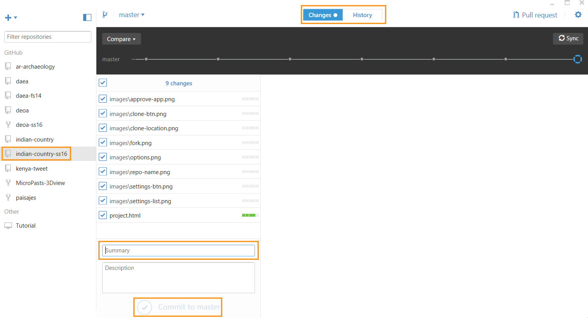Make sure you have selected the correct repo on the left side of the window (you can see that I have several repos).
Then, select the "Changes" tab at the top.
Give the commit a summary name, and then click the "Commit to..." button at the bottom.
The changes have now been saved into your cloned repo locally, but they are not yet on your original repo online. If you have made a mistake and committed something you did not intend to commit, you can keep the changes from going to the original repo by not doing any of these further steps. If this happens, it would be best to contact me (Brian Geyer) so I can show you how to properly save the work you want to save and delete the work you didn't mean to do.
Sync Clone to Original Repo
When you are ready, you can send all of your local changes to the original repo on GitHub by doing what is called a sync.
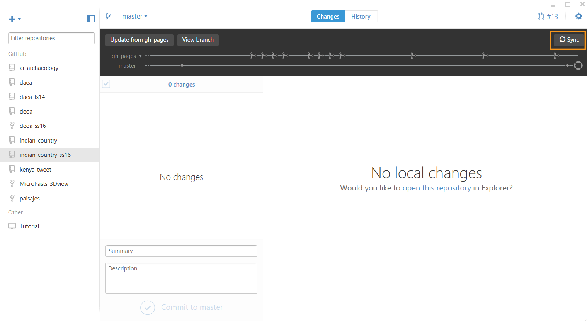To sync your cloned repo to your original one, make sure you don't have any changes waiting to be committed. As you can see in this example, there are none listed.
Click the "Sync" button in the top-right and wait for the progress bar to completely fill from left to right.
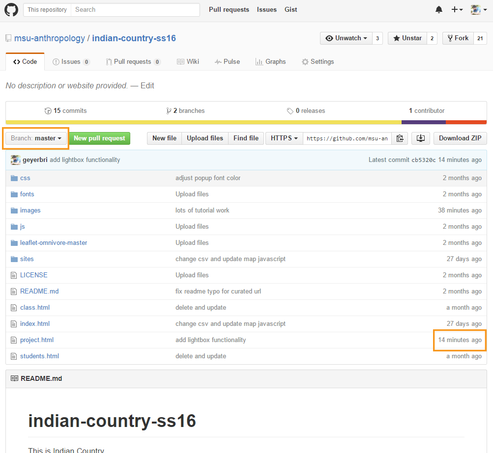After this, return to the repo in your internet browser (at github.com). If you have left your branch settings alone this entire time, you should notice that the file you've been changing will have more recent change times, as highlighted here. If you don't notice this, first check to see if you are looking at the proper branch. Change the displayed branch by clicking on the dropdown list highlighted in this image.
Create and Complete a Pull Request
For this example we will make a pull request that brings the changes you've made on the master branch from that branch to the gh-pages branch. To begin, change the displayed branch to the gh-pages one. See the last image in the previous section if you are having trouble finding the location of the dropdown list for your repo's branches.
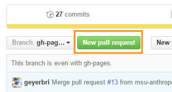Create a new Pull Request by clicking the Pull Request button.
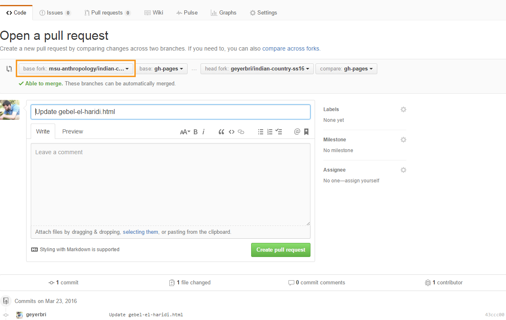The window that opens will look something like this one, with four dropdown menus: "base fork," "base," "head fork," and "compare." In this configuration, the system thinks you're asking to merge changes from one fork (yours) into another (in this case, the original). For this specific Pull Request, we are looking to make changes within our own forked repo, so it is important to change whichever fork (either the "base fork" or "head fork") from the original repo on the msu-anthropology account to one's own account.

Your own account should be the second entry on the list, under msu-anthropology.
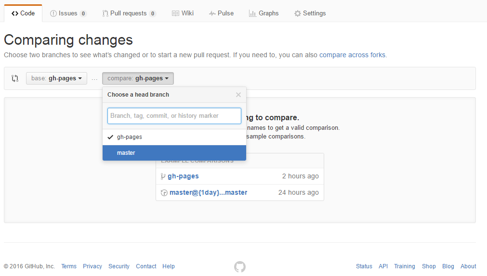After choosing your own account on this list, the "base fork" and "head fork" options will disappear and all that will remain are "base" and "compare," where they are set to the same branch: gh-pages.
Remember: "base" is the branch where your changes are going into and "compare" is where the changes are coming from. So, for this specific tutorial, you should leave the "base" as "gh-pages" and change the "compare" to "master."
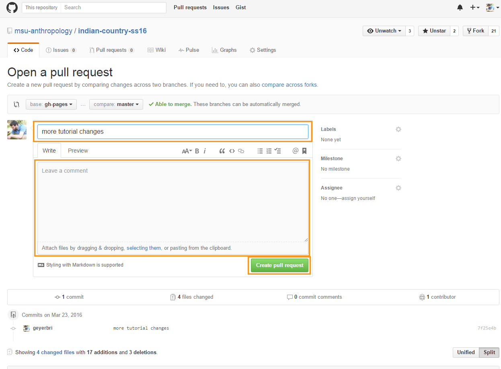After making this selection, the browser window should hopefully update again, to give you the ability to name the Pull Request (although, it will probably have a name based on the commit you did before), write extra details, and then create it.
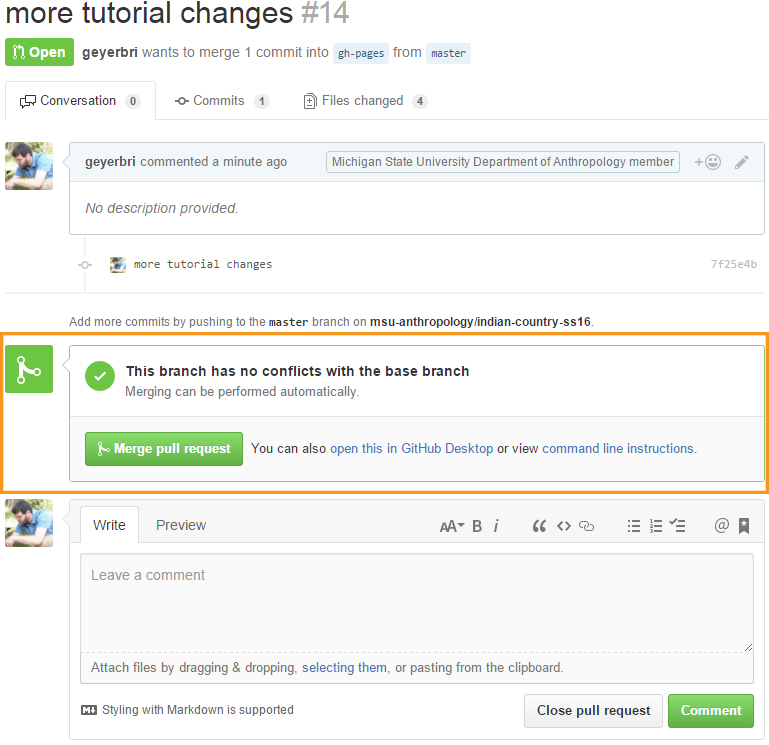If you have properly made sure you've only made changes to the one branch, the next window will indicate that your Pull Request can be merged automatically. Click "Merge pull request," and then "Confirm merge." After this, your Pull Request is complete and the changes you made should be on the other branch as well.
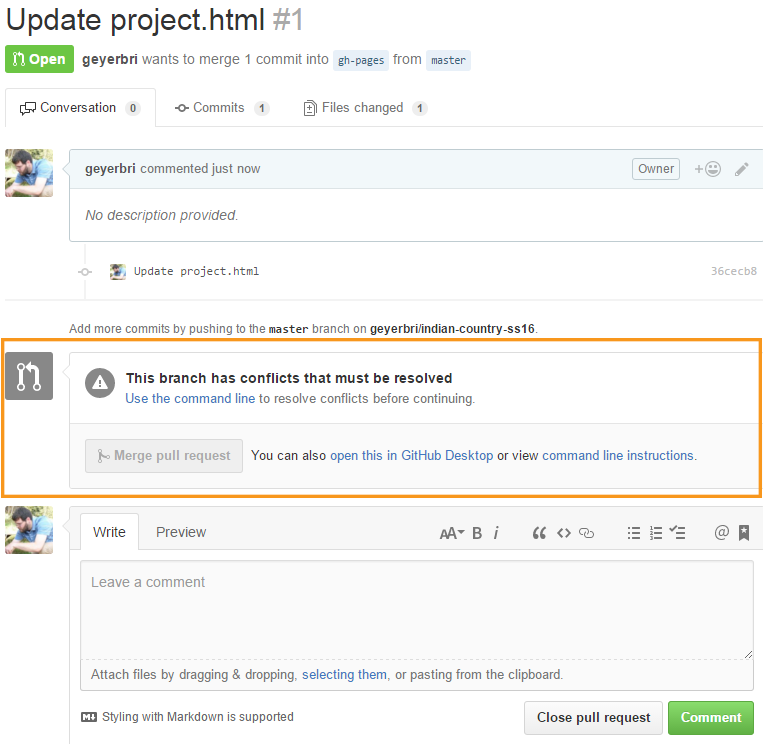However, if you have made changes to both branches, you may see a screen after creating the Pull Request that looks like this, where it says the changes cannot be merged automatically. In this case, please contact me or someone else in LEADR and we will help you resolve the issue.
That's it! If things have gone smoothly, you will have successfully made changes to a file on your own computer, and then sent those changes all the way from that location on your computer to your forked repo on GitHub and into another branch.
Turning In Your Work: Create Pull Request from Your Repo to the Main Repo
When you have completed your project, you will need to turn in your work. To do this, you'll need to create a Pull Request that sends your project from your own master branch to the main repo's master branch.
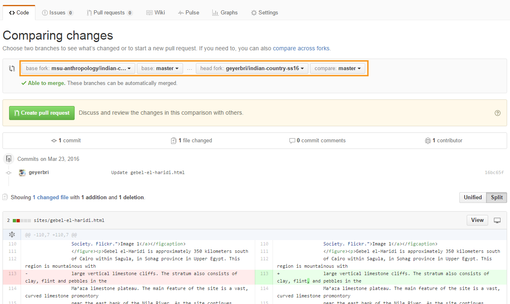To do this, you will follow most of the same steps above, but will be looking at your master branch when you click the Pull Request button. You will again reach the point shown in this image.
However, instead of changing the "base fork" from msu-anthropology to your own account, leave it alone. This means all the settings will be as shown: the "base fork" (where the changes are going into) is "msu-anthropology," the "base" is "master," the "head fork" is your account, and the "compare" should be "master" (or whichever of your branches contains your final version).

Click "Create pull request" and you should see a screen similar to this, where there is now "Merge pull request" button. If you have successfully reached this screen, then you have nothing more to do.
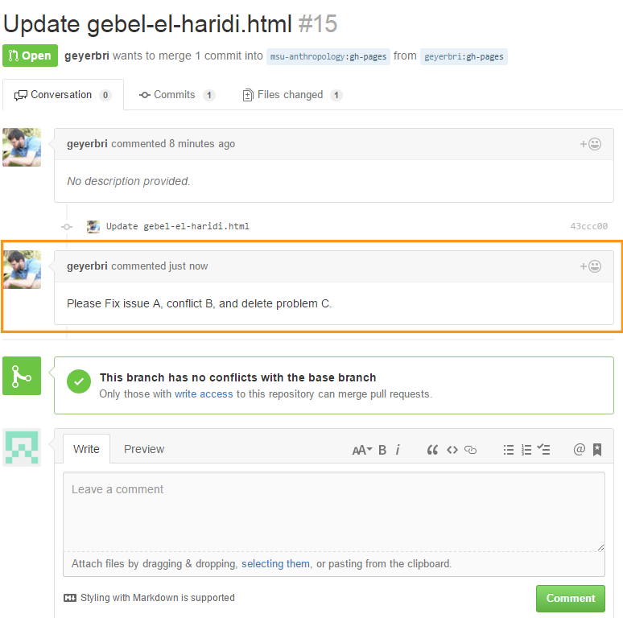HOWEVER, if you receive an email about a comment on your pull request, it means I have written something to you as a comment on your pull request. Please revisit your "turn-in" Pull Request and address the issues I have written there. This is an example of what a comment will look like.
Concluding Thoughts
Ok, I have tried to be as comprehensive as possible. If any of you have issues, please feel free to contact our main LEADR email address, leadr [at] msu [dot] edu, or myself at geyerbri [at] msu [dot] edu, to ask for assistance or set up an appointment to meet with someone. You may also stop by the lab any time that we are open. You can find our hours on the main page of our website.